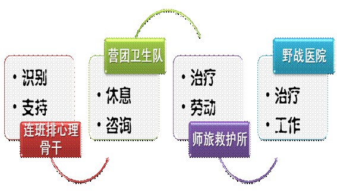

战时心理防护最重要的是对军心士气的维护、保持和激励。
激励军心士气的主要方法有：榜样激励法、鼓动激励法、奖惩激励法。也可以开展杀敌立功竞赛活动；掀起学英雄当英雄热潮；通报前方战况和后方支前热潮；组织亲人来信展评；重温入党、入伍誓词；组织党员干部突击队等。
一方面要善于弘扬团队精神，实施正向心理激励。另一方面，要组织团体心理辅导，缓解心理压力，如引导官兵相互倾诉自己的感受，把个体内心潜藏的恐惧、担忧和悲伤倾诉出来，把压抑的情感释放出来，在相互交流的集体氛围中得到心灵的慰藉和平衡，获得战友支持，增添心理能量，增强战斗勇气。
一种方法：情况总结会（心理汇报会），用以倾诉情绪，获得战友支持。
实施信息控制，要掌握敌方心理战方法和手段，干扰阻断敌方心理战信息传播，及时收缴敌方宣传品，适时摧毁敌方心理战设施；加强对网络、视听和通讯工具管控，分析和消除国际舆论和社会信息对官兵的负面心理影响。
战时心理调控主要培养、提高、维护三种心理能力：
战场心理适应能力在于对未来战争特点和战场情况有充分的了解和长期的训练，能迅速进入战斗状态，迅速生成战斗力。
心理稳定能力在于使用武器、履行职责、完成任务时能够保持稳定的情绪、清醒的认知和坚定的信念。
心理承受能力在于在承受压力、面临困难、遭受挫折时，依然能够有英勇顽强、乐观积极、百折不挠、勇往直前的精神。
战时心理调控的主要目标不是为了恢复心理健康，而是为了提升心理能力。在个人心理调控方面，官兵个人必须尽量多喝水，多吃饭，多休息或睡觉。每人应该至少掌握两种不能进行体育运动时运用的放松方法。
伊拉克战争中，美国军医在冷冻精子
上前线之前，注射疫苗
战时心理调控，建议采用四级防护体制：
